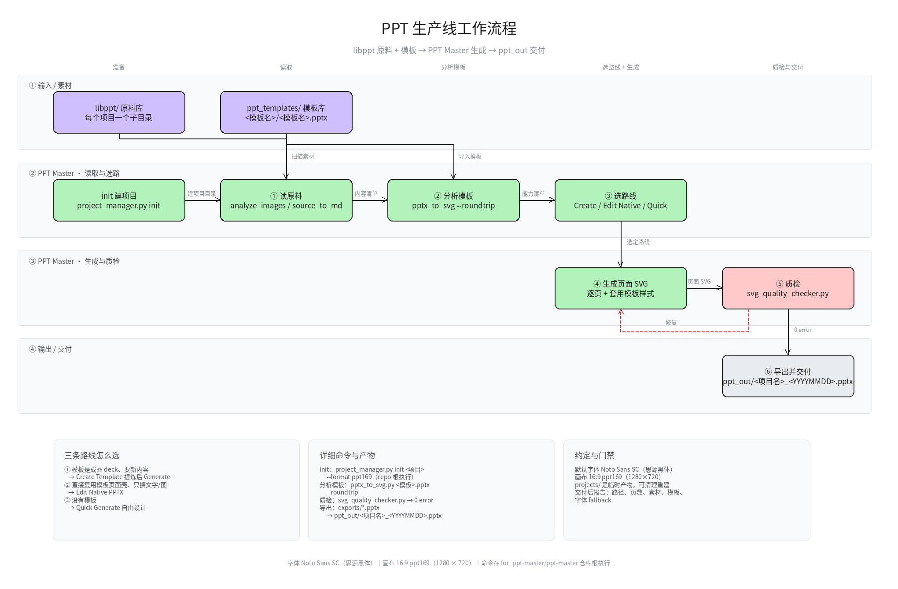

01 / 数据分析交互式 HTML 仪表盘
SC_EDU / ANALYTICSREPORT 01
分布 · 关系 · 预测探索数据
这里收录了我的数据分析、流程梳理和创意实验。每个作品都从一个具体问题出发，再用 AI 工具把想法变成看得见、能打开的成果。
将原料整理、模板分析、路线选择和质量检查串成一条生产线。另一个版本把输入、工作区与交付物的关系画得更清楚。



把熟悉的篮球记忆和奶龙的搞笑气质放在一起，做成一个轻松的短视频。学习作品集也要留一点快乐的位置。